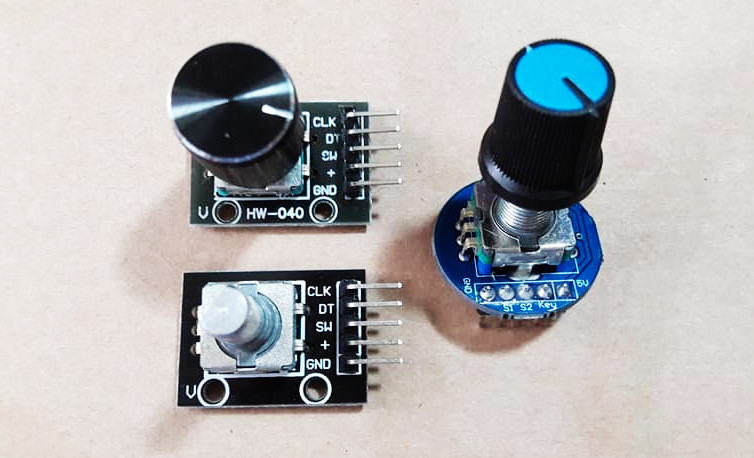
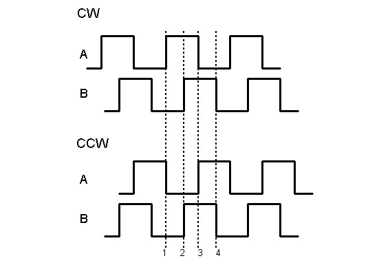
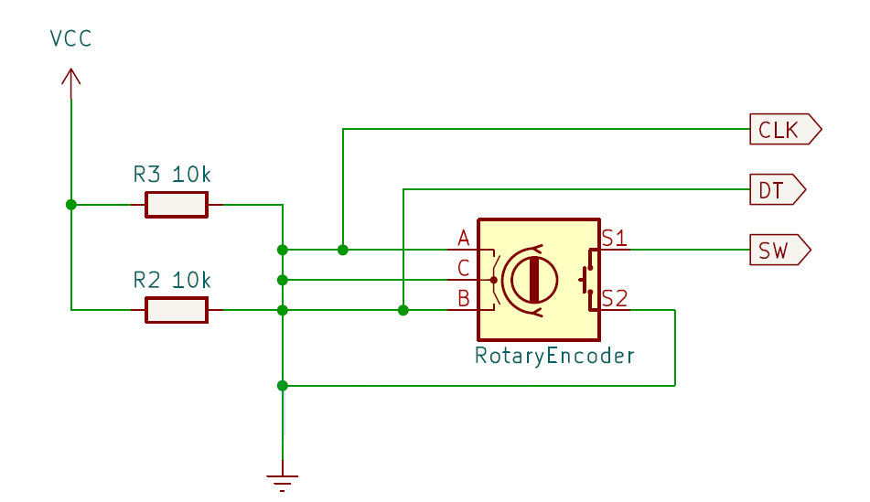
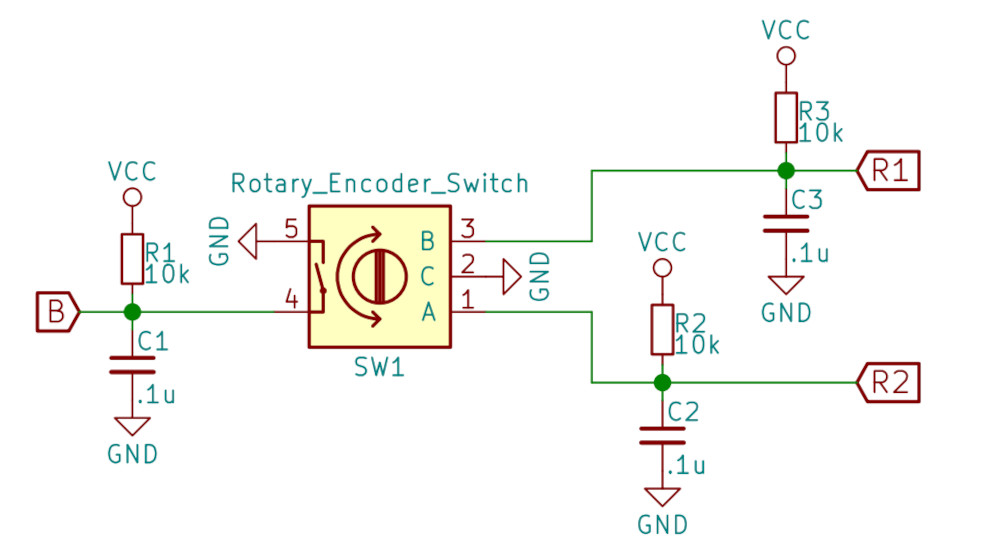
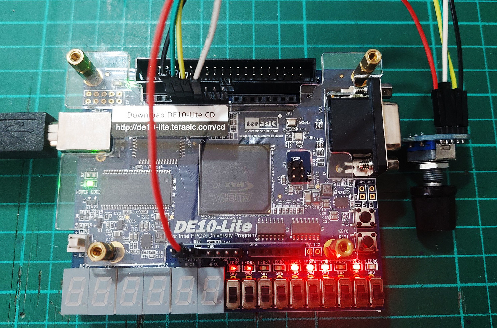
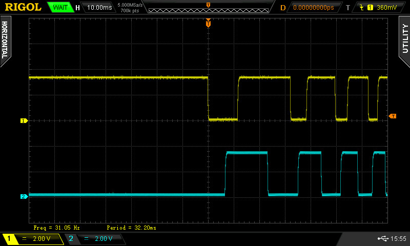
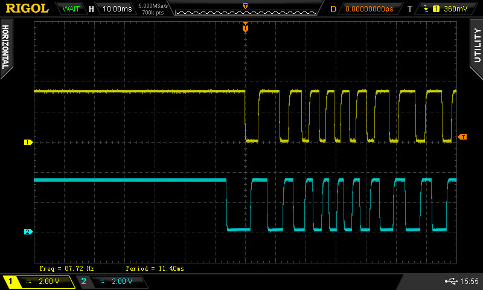
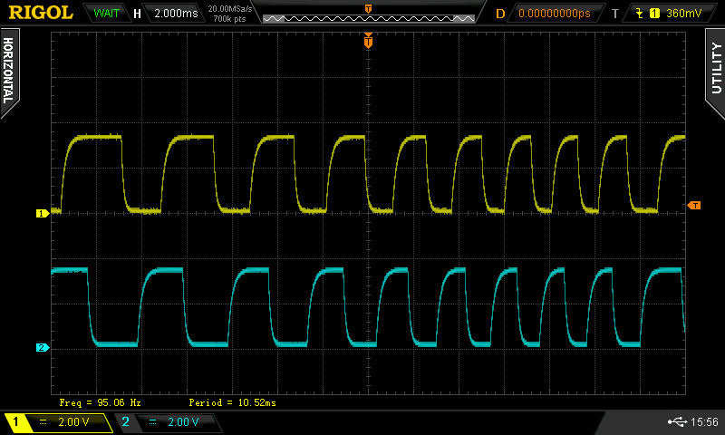

Tutorial: Rotary Encoder Interfacing#
Rotary Encoder Module#
A rotary encoder module with a knob is an input device
consisting of a rotatable knob and two output pins,
commonly labeled A and B.
A rotary encoder switch module is similar, but includes a push-button switch integrated into the knob, with an additional output pin for the button.
In its idle state, both output signals A and B are typically HIGH
(often pulled up via internal or external pull-up resistors).
When the knob is rotated, the module generates two pulse signals. These signals are offset from each other by 90 degrees in phase. Depending on the rotation direction — clockwise (CW) or counterclockwise (CCW) — signal A will either lead or lag behind signal B. This phase difference allows the system to determine the direction of rotation.

Figure: Examples of rotary encoder modules

Figure: Output waveforms (CW vs. CCW)
Additionally, the pulse width or frequency of signals A and B
corresponds to the rotation speed.
Faster rotation results in shorter pulses (higher frequency),
while slower rotation produces longer pulses (lower frequency).
Spikes or glitches may occur on signals A and B, similar to
the bouncing effect seen in mechanical push buttons.
These unwanted transitions are caused by mechanical contact noise
inside the rotary encoder and can lead to false triggering.
Devices similar to rotary-encoder modules include optical rotary encoders, which are commonly mounted to the shaft end of a DC motor. These sensors use an optical disk with patterned slots and a photodetector to generate precise pulse signals as the shaft rotates.
The frequency of the output pulses depends on the motor's rotation speed and the number of divisions (steps) on the optical disk. At higher speeds or with finer resolution disks, the pulse rate increases significantly, enabling precise speed and position measurements.


Figure: Schematic examples of rotary encoder modules
VHDL Demo Code#
The following VHDL code demonstrates how to detect rotation of a rotary encoder switch module. When rotated, the internal 8-bit counter is incremented or decremented, but the value is constrained between 0 and 255. The current counter value is displayed using 8-bit LEDs. If the encoder's push button is pressed, the counter is reset to an initial value (e.g., 0).
VHDL Code Listing
-- File: rotary_encoder_demo.vhd
LIBRARY ieee;
USE ieee.std_logic_1164.ALL;
USE ieee.numeric_std.ALL;
ENTITY rotary_encoder_demo IS
GENERIC (
CLK_HZ : INTEGER := 50000000;
SAMPLE_RATE : INTEGER := 1000;
BW : INTEGER := 8
);
PORT (
CLK : IN STD_LOGIC;
RST_N : IN STD_LOGIC;
SW_A : IN STD_LOGIC; -- S1
SW_B : IN STD_LOGIC; -- S2
BTN : IN STD_LOGIC; -- KEY
Q : OUT STD_LOGIC_VECTOR(BW - 1 DOWNTO 0)
);
END rotary_encoder_demo;
ARCHITECTURE behavioral OF rotary_encoder_demo IS
CONSTANT CNT_MAX : NATURAL := (CLK_HZ/SAMPLE_RATE) - 1;
SIGNAL capture : STD_LOGIC_VECTOR(3 DOWNTO 0) := (OTHERS => '1');
SIGNAL update : STD_LOGIC := '0';
SIGNAL change : STD_LOGIC := '0';
SIGNAL inc, dec : STD_LOGIC := '0';
SIGNAL count : unsigned(BW - 1 DOWNTO 0) := (OTHERS => '0');
CONSTANT INIT_VALUE : INTEGER RANGE 0 TO 2**BW - 1 := 0;
BEGIN
-- This process implements switch debouncing logic.
sw_capture_proc : PROCESS (RST_N, CLK)
VARIABLE wait_cnt : NATURAL RANGE 0 TO CNT_MAX := 0;
BEGIN
IF RST_N = '0' THEN
wait_cnt := 0;
capture <= (OTHERS => '1');
update <= '0';
ELSIF rising_edge(CLK) THEN
IF wait_cnt = CNT_MAX THEN
wait_cnt := 0;
update <= '1';
capture <= capture(1 DOWNTO 0) & (SW_A & SW_B);
ELSE
wait_cnt := wait_cnt + 1;
update <= '0';
END IF;
END IF;
END PROCESS;
-- Detect the falling edge on the captured SW_A signal
change <= capture(3) AND (NOT capture(1));
-- Check the logic level of the captured SW_B signal.
inc <= change AND (NOT capture(0)); -- Enable counter increment
dec <= change AND capture(0); -- Enable counter decrement
count_proc : PROCESS (RST_N, CLK)
BEGIN
IF RST_N = '0' THEN
count <= (OTHERS => '0');
ELSIF rising_edge(CLK) THEN
IF BTN = '0' THEN
count <= to_unsigned(INIT_VALUE, BW); -- initialize counter
ELSIF update = '1' THEN -- Update count value.
IF inc = '1' THEN -- Increment the counter value
IF count < (2**BW - 1) THEN
count <= count + 1;
END IF;
ELSIF dec = '1' THEN -- Decrement the counter value
IF count > 0 THEN
count <= count - 1;
END IF;
END IF;
END IF;
END IF;
END PROCESS;
-- Outputs counter value
Q <= STD_LOGIC_VECTOR(count);
END behavioral;
A Tcl script for MAX10 Lite pin assignments is also provided as an example.
#============================================================
# FPGA assignments
#============================================================
#set_global_assignment -name FAMILY "MAX 10 FPGA"
#set_global_assignment -name DEVICE 10M50DAF484C7G
#============================================================
# CLOCK
#============================================================
set_instance_assignment -name IO_STANDARD "3.3-V LVTTL" -to CLK
set_location_assignment PIN_P11 -to CLK
#============================================================
# PUSH BUTTONS
#============================================================
set_instance_assignment -name IO_STANDARD "3.3 V SCHMITT TRIGGER" -to RST_N
set_location_assignment PIN_B8 -to RST_N
#============================================================
# LEDS
#============================================================
foreach i {0 1 2 3 4 5 6 7} {
set_instance_assignment -name IO_STANDARD "3.3-V LVTTL" -to Q[$i]
}
set_location_assignment PIN_D14 -to Q[7]
set_location_assignment PIN_E14 -to Q[6]
set_location_assignment PIN_C13 -to Q[5]
set_location_assignment PIN_D13 -to Q[4]
set_location_assignment PIN_B10 -to Q[3]
set_location_assignment PIN_A10 -to Q[2]
set_location_assignment PIN_A9 -to Q[1]
set_location_assignment PIN_A8 -to Q[0]
#============================================================
# GPIOs
#============================================================
set_instance_assignment -name IO_STANDARD "3.3-V LVTTL" -to SW_A
set_instance_assignment -name IO_STANDARD "3.3-V LVTTL" -to SW_B
set_instance_assignment -name IO_STANDARD "3.3-V LVTTL" -to BTN
set_location_assignment PIN_AA19 -to BTN
set_location_assignment PIN_Y19 -to SW_A
set_location_assignment PIN_AB20 -to SW_B
The following photos show the rotary_encoder_demo design
being tested on the MAX10 Lite FPGA board.

Figure: MAX10 Lite FPGA board + Rotary encoder switch module
Some output waveforms (A and B) of the rotary encoder switch module,
measured by a digital oscilloscope (CH1 and CH2, respectively),
are shown below.

Figure: Forward (clockwise) rotation

Figure: Forward (clockwise) rotation (higher rotation speed)
Figure: Backward (anti-clockwise) rotation
Figure: Backward (anti-clockwise) rotation (higher rotation speed)

Figure: Output waveforms resulting from higher-speed rotation
This work is licensed under a Creative Commons Attribution-ShareAlike 4.0 International License.
Created: 2025-06-11 | Last Updated: 2025-06-11